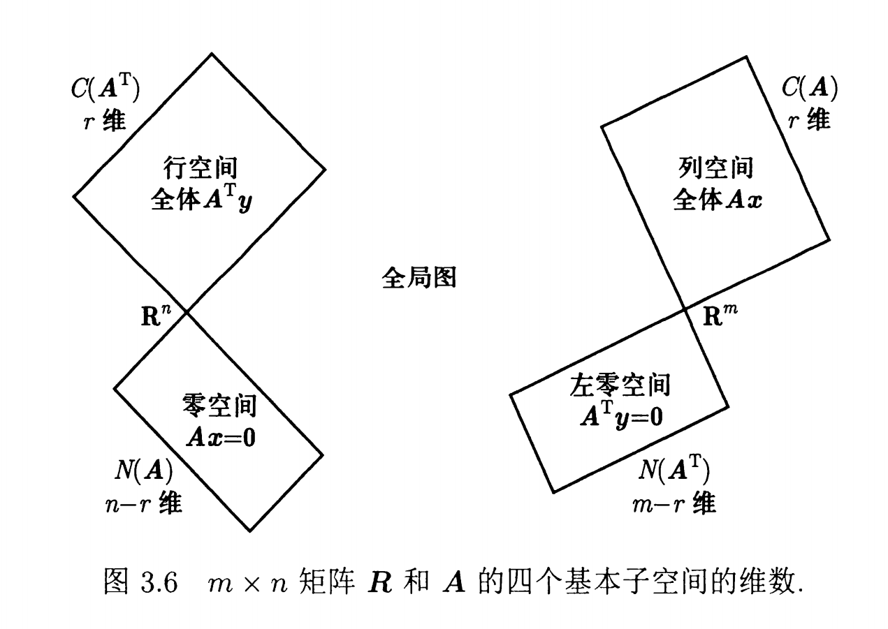

向量空间
约 4243 个字 1 张图片 预计阅读时间 21 分钟
1. 向量空间
\(n\) 维实列向量构成的全体向量集合称为向量空间 \(\mathbb{R}^{n}\)．这是狭义上的定义，广义的向量空间定义为任何满足加法与数乘封闭性的空间，如实多项式空间 \(\mathbb{P}^{n}\)、复向量空间 \(\mathbb{C}^{n}\)、二维矩阵空间等．
本章节默认谈论的向量与矩阵均为实向量、实矩阵．
向量空间的本质特征是对加法和数乘封闭．对于空间内的任意的元素 \(\boldsymbol{u},\boldsymbol{v}\)，其必须满足：对于任意实数 \(\lambda,\mu\)，\(\lambda\boldsymbol{u}+\mu\boldsymbol{v}\) 仍然在该向量空间内．
具体而言，向量空间需要满足如下八条定律
- 满足加法交换律： \(\boldsymbol{x}+\boldsymbol{y}=\boldsymbol{y}+\boldsymbol{x}\)
- 满足加法结合律： \((\boldsymbol{x}+\boldsymbol{y})+\boldsymbol{z}=\boldsymbol{x}+(\boldsymbol{y}+\boldsymbol{z})\)
- 存在加法单位元 \(\boldsymbol{0}\) 使得对任意元素 \(\boldsymbol{x}\)：\(\boldsymbol{x}+\boldsymbol{0}=\boldsymbol{x}\)
- 对任意元素 \(\boldsymbol{x}\) 存在加法逆元 \(-\boldsymbol{x}\)：\(\boldsymbol{x}+(-\boldsymbol{x})=\boldsymbol{0}\)
- 对在乘法单位元 \(1\) 使得对任意元素 \(\boldsymbol{x}\)：\(1\cdot \boldsymbol{x}=\boldsymbol{x}\)
- 满足数乘结合律：\((c_{1}c_{2})\boldsymbol{x}=c_{1}(c_{2}\boldsymbol{x})\)
- 满足向量分配律：\(c(\boldsymbol{x}+\boldsymbol{y})=c\boldsymbol{x}+c\boldsymbol{y}\)
- 满足标量分配律：\((c_{1}+c_{2})\boldsymbol{x}=c_{1}\boldsymbol{x}+c_{2}\boldsymbol{x}\)
显然，一个向量空间必须包含零元．
2. 子空间
子空间是特定向量空间的一个子集，子空间也必须满足上述八条性质．
例如，三维空间中的一个平面是 \(\mathbb{R}^{3}\) 的一个子空间，因为该平面上的向量符合八条性质；而一个四分之一平面不是子空间，当我们对平面内任意一个向量赋予系数 \(-1\) 后其就会脱离该四分之一平面．
注意
子空间本质上是向量空间，但要注意其所在的维度．如由 \(\boldsymbol{u}=(1,0,0)^{T}\) 与 \(\boldsymbol{v}=(0,1,0)^{T}\) 的所有线性组合形成的子空间是三维空间中的一个平面，其为 \(\mathbb{R}^{3}\) 的一个子空间而不是向量空间 \(\mathbb{R}^{2}\)．我们可以先直观地感受出该子空间的维数是二维，关于维数后文有更严谨的定义．
3. 张成空间
对于向量空间 \(\boldsymbol{V}\) 中给定的有限向量集合 \(S = \{\boldsymbol{v_1}, \boldsymbol{v_2}, \dots, \boldsymbol{v_k}\}\)，将 \(S\) 内所有向量的所有线性组合构成一个无限集 \(SS\)，将 \(SS\) 称为这组向量的张成空间（Span）．
由于张成空间是由向量的线性组合形成的，因此其天然符合子空间的定义，必然为原空间 \(V\) 的一个子空间．
4. 列空间
对于一个 \(m\times n\) 的矩阵 \(A\)，其列向量在 \(\mathbb{R}^{m}\) 中．其 \(n\) 个列向量可以通过线性组合得到一个 \(\mathbb{R}^{m}\) 的子空间，这个子空间称为 \(A\) 的列空间，记作 \(\boldsymbol{C}(A)\)．由于列空间是列向量的张成空间，其必然是 \(\mathbb{R}^{m}\) 的子空间．
线性方程组本质就是列向量的线性组合，因此若 \(\boldsymbol{b}\in \boldsymbol{C}(A)\)，该方程有解，反之无解．
行变换会改变列空间
以
为例，显然 \(\boldsymbol{C}(A)\) 为终点在 \(y=x\) 上的所有向量，\(\boldsymbol{C}(R)\) 为终点在 \(x\) 轴上的所有向量，列空间不一致．
5. 零空间
满足 \(A\boldsymbol{x}=\boldsymbol{0}\) 的所有解向量 \(\boldsymbol{x}\) 构成一个集合 \(\boldsymbol{N}(A)\)，称为 \(A\) 的零空间．显然零空间中的向量在 \(\mathbb{R}^{n}\) 中．接下来检查零空间是否为 \(\mathbb{R}^{n}\) 的一个子空间：
- 包含零向量：\(A\cdot \boldsymbol{0}=\boldsymbol{0}\)．
- 符合加法封闭性：若 \(A\boldsymbol{u}=\boldsymbol{0}\) 且 \(A\boldsymbol{v}=\boldsymbol{0}\)，则 \(A(\boldsymbol{\lambda u+\mu v})=\lambda A\boldsymbol{u} + \mu A\boldsymbol{v}=\boldsymbol{0}\)，仍然在零空间内．
- 符合数乘封闭性：若 \(A\boldsymbol{u}=\boldsymbol{0}\)，则 \(A(c\boldsymbol{u})=cA\boldsymbol{u}=c\cdot\boldsymbol{0}=0\)．
因此，零空间是 \(\mathbb{R}^{n}\) 的一个子空间．
与列空间不同，行变换相当于方程组消元操作，该过程不会改变方程组 \(A\boldsymbol{x}=\boldsymbol{0}\) 的解，即不会改变矩阵的零空间．
5.1 求解
由于行变换不会改变零空间，我们可以用 Gauss-Jordan 消元将矩阵消元得到简化行阶梯形矩阵 \(R=\text{rref}(A)\)，接着解方程 \(R\boldsymbol{x}=\boldsymbol{0}\) 通过求零空间的特殊解（special solutions，与之后的特解 particular solutions 不同），通过线性组合得到整个零空间．
\(\text{rref}\) 中的主元数就是矩阵的秩 \(r\)，它代表了多少个有效方程组．对于 \(n\) 个变量，其自由度为 \(n\)，当有 \(r\) 个有效方程将其约束时，其自由度减少为 \(n-r\)，也就是说该方程组只要确定 \(n-r\) 个变量，剩下 \(r\) 个就会自动确定．
为了方便求解，我们可以直接将主元所在列视为约束变量，非主元所在列视为自由变量（因为主元的系数为 \(1\)，自由变元确定后只需移项即可解得主元变量）．也就是说一共有 \(n-r\) 个自由变量，为了让这 \(n-r\) 个自由变量对应的特殊解向量在零空间中线性无关，我们可以对第 \(i\) 个特殊解向量的第 \(i\) 个自由变元取 \(1\) 而其他自由变元取 \(0\)．
此时我们会得到 \(n-r\) 个线性无关的特殊解向量，我们可以用这 \(n-r\) 个向量张成 \(\mathbb{R}^N\) 空间的一个 \(n-r\) 维子空间，得到零空间中的所有向量．
Example
其有三个主元，\(r=3\)，自由变量数为 \(n-r=5-3=2\)，为 \(x_{3}\) 和 \(x_{5}\)；为了求解零空间，我们分别取
得到两个特殊解向量 \(\boldsymbol{s_1}=(-a, -b, 1, 0,0)^{T}\) 与 \(\boldsymbol{s_2}=(-c,-d,0,-e,1)^{T}\)，即为零空间中两个基向量．
简便求法
由于我们每次只将一个自由变元设置为非 \(0\) 值，以 \(x_{3}=1\) 为例，我们将所有主元列移到左边而自由列移到右边
显然这三个主元取的值就是自由变元列从上到下的分量的相反数．对于所有自由变元都是如此．
6. \(A\boldsymbol{x=b}\) 的全解
6.1 增广行阶梯形
在之前的讨论中，由于右侧为 \(0\) 向量，因此不用考虑行变换对其影响；此处我们讨论 \(A\boldsymbol{x=b}\) 的解，\(\boldsymbol{b}\) 会被行变换改变，因此我们需要对增广矩阵 \([A,\boldsymbol{b}]\) 同时做行变换得到矩阵 \([R,\boldsymbol{b}]\)．
此处我们可以提前判断是否有解：在 \([R,\boldsymbol{d}]\) 中，若存在一行使得 \(R\) 中该行元素全为 \(0\) 而 \(\boldsymbol{d}\) 的该分量不为 \(0\)，此时任何线性组合都无法得到 \(\boldsymbol{d}\)，方程组无解．
6.2 特解
我们尝试寻找 \(R\boldsymbol{x=d}\) 的一个特解 \(\boldsymbol{x_{p}}\)（particular solutions）．由于自由变元的取值不影响解的存在性（后文会解释），因此不妨将其全部设为 \(0\)．解出此时的 \(\boldsymbol{x_{p}}\)．接着利用其零空间得到所有解 \(\boldsymbol{x}=\boldsymbol{x_{n}+x_{p}}\)．
例
将 \(x_{2}\) 与 \(x_{4}\) 取为 \(0\)，解得 \(\boldsymbol{x_{p}}=(1,0,6,0)^{T}\)（此处可以参考上文零空间的简便求法，主元取值就是 \(\boldsymbol{d}\) 的前 \(r\) 行值）．由于零空间基向量为 \(\boldsymbol{s_{1}}=(-3,1,0,0)^{T}\) 与 \(\boldsymbol{s_{2}}=(-2,0,-4,1)^{T}\)，因此特解为
6.3 全解性证明
先证明所有 \(\boldsymbol{x}=\boldsymbol{x_{n}+x_{p}}\) 均为 \(A\boldsymbol{x=b}\) 的解：
得证．
在证明所有 \(A\boldsymbol{x=b}\) 的解 \(\boldsymbol{x}\) 均可被 \(\boldsymbol{x_{n}+x_{p}}\) 表示：
由于 \(A\boldsymbol{x=b}\)，考虑 \(A(\boldsymbol{x-x_{p}})=A\boldsymbol{x}-A\boldsymbol{x_{p}}=\boldsymbol{b-b}=\boldsymbol{0}\)，因此所有解减去特解后必定落在零空间上，而我们的 \(x_{n}\) 表示的是零空间中的所有向量，因此解向量必然已经被我们所表示．
综上，我们得到的解即为原方程组 \(A\boldsymbol{x=b}\) 的解．
注意
与零空间、列空间不同，\(A\boldsymbol{x=b}\) 的解空间在 \(\boldsymbol{b\ne0}\) 时并不是一个向量空间，因为其不含有零元 \(0\)．其解空间是零空间在特解向量上的一个偏移．
此时上方的问题”自由变元取值不影响解的存在性“就显然了：如果解存在，由于全解需要加上整个零空间，自由变元自然可以取遍所有值；而如果解不存在，自由变元取任何值都无法得到目标向量．
7. 秩与方程组解
上文提到，\(\text{rref}\) 的主元数就是该矩阵的秩．同时秩还可以是其他概念，如有效方程组数、列空间维数等．从“有效方程组数”而言，无论是行视角还是列视角，它们对应的有效方程组数都是相同的，因此有行秩等于列秩．
下面讨论 \(m\times n\) 矩阵 \(A\) 的秩与方程组解的关系．
7.1 行列均满秩
行列均满秩说明该矩阵为方阵，并且其有 \(n\) 个主元位于其对角线上，这些主元可以将其他位置元素全部消 \(0\)．也就是说，\(\text{rref}(A)=I\)．此时对应的解为 \(\boldsymbol{x=d}\)，有且只有一解．
7.2 列满秩
列满秩矩阵满足 \(r=n\le m\)，这样的矩阵是“瘦高”的．其 \(\text{rref}\) 一定是这样的形式：
其没有自由变元，因此其解的数量为 \(0\) 或 \(1\)：当 \(\boldsymbol{d}\) 在 \(\text{rref}\) 的零行全为 \(0\) 时有 \(1\) 解，反之无解．
7.3 行满秩
行满秩矩阵满足 \(r=m\le m\)，我们不妨将其主元列移到前 \(m\) 列（相当于给 \(\boldsymbol{x}\) 分量的顺序交换了），其 \(\text{rref}\) 是这样的形式：
由于行满秩矩阵无零行，其可以保证必然有解（只需让 \(\boldsymbol{x}\) 取 \(\boldsymbol{d}\) 的四个分量即可）；而由于其有自由变元，因此有无数解．
此时其解是这样的形式：
7.4 行列均不满秩
此时 \(\text{rref}(A)\) 是这样的形式：
\(\boldsymbol{d}\) 在 \(\text{rref}\) 的零行全为 \(0\) 时，其有解，并且由于存在自由变元，有无数解；反之无解．
8. 线性相关性
对于给定的一组向量 \(\boldsymbol{v_1}, \boldsymbol{v_2}, \dots, \boldsymbol{v_n}\)，如果存在不全为 \(0\) 的实数 \(c_1, c_2, \dots, c_n\)，使得它们满足线性组合为零向量：
则称这组向量线性相关．反之，如果上述等式成立的唯一条件是 \(c_1 = c_2 = \dots = c_n = 0\)，则称这组向量线性无关．
根据矩阵视角，我们可以将这 \(n\) 个向量拼成一个矩阵 \(A\)．判断一组向量是否线性相关，本质就是判断 \(A\boldsymbol{x=0}\) 是否有非零解，而这部分我们已经很熟悉了．
- 若其无非零解，即零空间 \(\boldsymbol{N}(A)={\boldsymbol{0}}\)、\(r=n\)（列满秩），说明该向量组线性无关．
- 反之若零空间含有非 \(0\) 向量，说明该向量组线性相关．
显然，若一组向量中存在零向量 \(\boldsymbol{0}\)，这组向量必然线性相关．
9. 基
一个向量组要成为一个向量空间中的基（basis）必须满足两个条件：
- 可张成性（足够多）：这个向量组足已张成这个向量空间
- 线性无关性（足够少）：该向量组线性无关
也就是说，向量空间的基就是能张成该空间的最少向量．
显然一个向量空间可以有多组基，因为其可以有无数个线性无关的、足以张成该向量空间的向量组．我们将向量空间 \(\mathbb{R}^{n}\) 中，\(n\) 阶单位矩阵的各列组成的基称为标准基．
对于给定的基，其不仅能够表达向量空间内任意向量，并且对所有向量的表达方式唯一．
证明
不妨设存在 \(\boldsymbol{v}\)，其有两种表达方式
相减得到
由基的线性无关性可知，唯一解为 \(a_{i}-b_{i}=0\)，因此其表达方式是唯一的．
10. 维数
由“足够少”我们可以直观的感觉：虽然可以有多组基，但是基的大小都是一样的；因为如果不一样就会违反“足够小”这个特点．
证明
不妨设向量空间中两组大小不同的基为 \(\boldsymbol{v_{1}},\boldsymbol{v_{2}},\dots,\boldsymbol{v_{m}}\) 与 \(\boldsymbol{w_{1}},\boldsymbol{w_{2}},\dots,\boldsymbol{w_{n}}\)，且 \(n >m\)．
由于 \(\boldsymbol{v_{i}}\) 组成了向量空间的一组基，因此其线性组合可以表达出该空间中任意向量，包括 \(\boldsymbol{w_{i}}\)．
不妨设 \(V\boldsymbol{a_{1}}=\boldsymbol{w_{1}}\)，依次类推得到 \(VA=W\)，其中 \(V\) 是 \(\boldsymbol{v_{1}}\sim \boldsymbol{v_{m}}\) 拼成的矩阵，\(W\) 是 \(\boldsymbol{w_{1}}\sim \boldsymbol{w_{n}}\) 拼成的矩阵．
显然 \(A\) 是一个 \(m\) 行 \(n\) 列的矩阵．则 \(r(A)\le\min(m,n)<n\)，因此零空间维度为 \(n-r(A)>0\)，存在非零解 \(\boldsymbol{x}\) 使得 \(A\boldsymbol{x=0}\)，从而 \(W\boldsymbol{x}=VA\boldsymbol{x}=V\cdot\boldsymbol{0}=\boldsymbol{0}\)，\(W\) 不满足线性无关性，矛盾．
一个向量空间的所有基都有相同的大小，我们将其称为该向量空间的维数．
注意
“维数”这个词在不同的表述中有不同的定义：
- 向量的维数：表示向量的分量个数
- 向量空间的维数：表示向量空间中基所含向量的个数
11. 矩阵的四个子空间

- \(\mathbb{R}^{n}\) 的一个子空间：行空间 \(C(A^{T})\)．
- \(\mathbb{R}^{m}\) 的一个子空间：列空间 \(C(A)\)．
- \(\mathbb{R}^{n}\) 的一个子空间：零空间 \(N(A)\)．
- \(\mathbb{R}^{m}\) 的一个子空间：左零空间 \(N(A^{T})\)．
不妨设原矩阵为大小 \(m\times n\) 的 \(A\)，且 \(\text{rref}(A) =R\)，矩阵的秩为 \(r\)．
11.1 行空间 \(C(A^{T})\)
行空间是由矩阵的行向量生成的，行向量是 \(n\) 维向量，因此行空间是 \(\mathbb{R}^{n}\) 的子空间．
由于行变换不改变行空间，因此 \(A\) 的行空间与 \(R\) 相同，其维数为 \(r\)，基为 \(R\) 中的非零行．
11.2 列空间 \(C(A)\)
列空间是由矩阵的列向量生成的，列向量是 \(m\) 维向量，因此列空间是 \(\mathbb{R}^{m}\) 的子空间．
由于行变换改变列空间，因此 \(A\) 的列空间与 \(R\) 不同，但是维数相同，均为 \(r\)；基为 \(R\) 中主元所在列编号对应 \(A\) 中的列．
11.3 零空间 \(N(A)\)
零空间是由所有满足 \(A\boldsymbol{x}=0\) 的向量 \(\boldsymbol{x}\) 构成的，显然 \(\boldsymbol{x}\) 为 \(n\) 维向量，因此零空间是 \(\mathbb{R}^{n}\) 的子空间．
由于行变换不改变方程组的解，因此 \(A\) 的零空间与 \(R\) 相同，维数为 \(n-r\)（有 \(n-r\) 个自由变元），基为对所有自由变元做操作“单个自由变元取 \(1\)，其余自由变元取 \(0\)”得出来的向量组．
11.4 左零空间 \(N(A^{T)}\)
左零空间是所有满足 \(A^{T}\boldsymbol{y}=0\) 的向量 \(\boldsymbol{y}\) 构成的，显然 \(\boldsymbol{y}\) 为 \(m\) 维向量，因此左零空间是 \(\mathbb{R}^{m}\) 的子空间．
对于 \(A^{T}\boldsymbol{y}=0\)，两边同时转置得到 \(\boldsymbol{y}^{T}A=0\)，其可以看作是对 \(A\) 左乘的行向量得到的零空间，因此称为左零空间．与列空间类似，\(A\) 的左零空间与 \(R\) 不一样，但维数相同，均为 \(m-r\)．